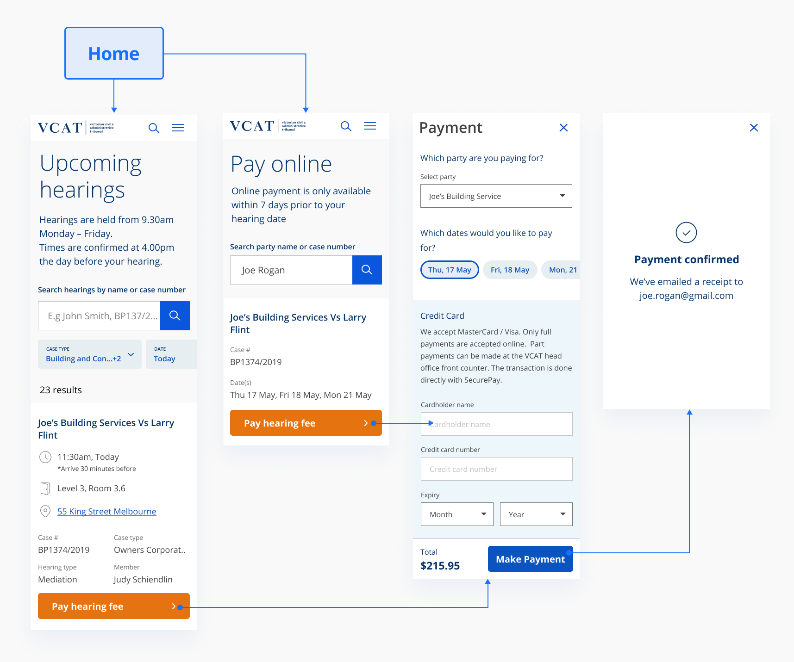

Web
UI design, interaction design, user testing
2020
One of the most visited sections of the VCAT site is the hearings page. Here, users can look up when and where their hearing is. The previous state of it was pretty basic. Pain points included:
The old version of hearings.
As the components had already been made, it was a matter of dragging and dropping in components from our new design system, allowing me to prototype and test straight away in high-fidelity. Here I've constructed a userflow using such components to link hearings to a new online payment portal.
Payment portal accessible from both the hearings page, and payments page
Various micro-interactions were implemented in order to allow the user to complete their tasks as smooth as possible. They include:
Desktop experience starting from the hearings page
Mobile experience starting from the payments page
The above prototypes were usertested with a 100% pass rate on first iteration. Users clearly understood how to look up their case, and pay for it. This feature is being built in React and is currently in development (as of Aug 2020).